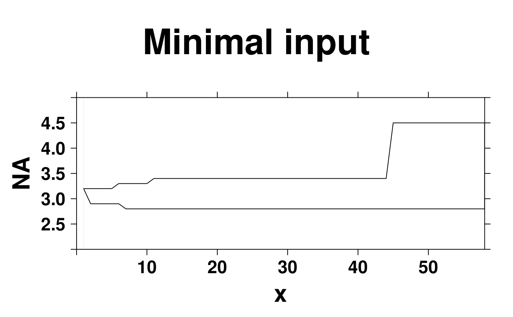
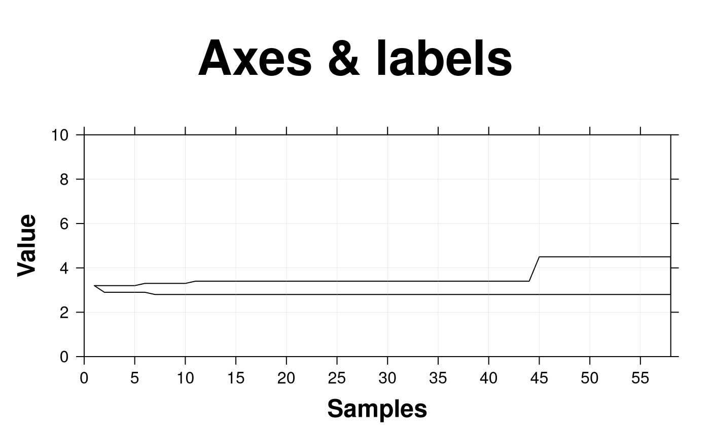
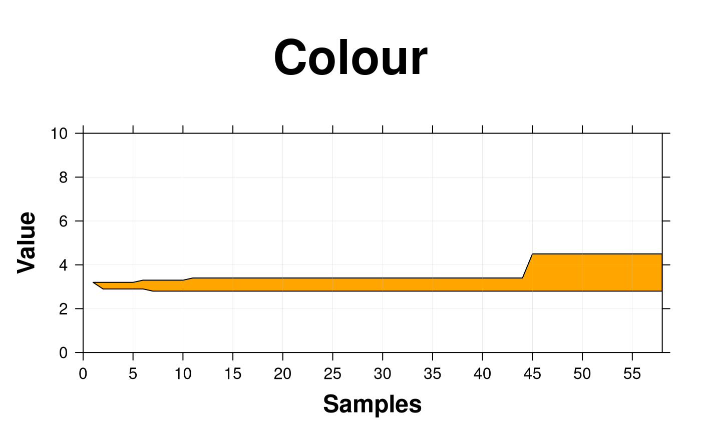
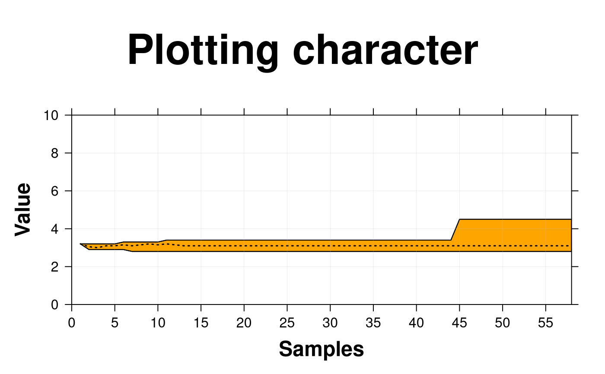
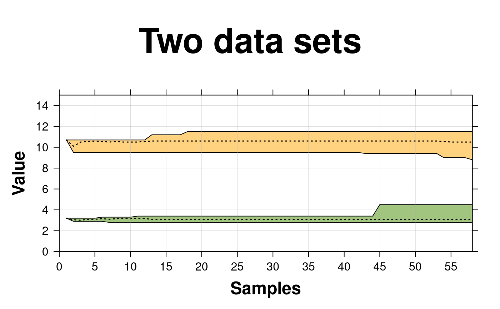
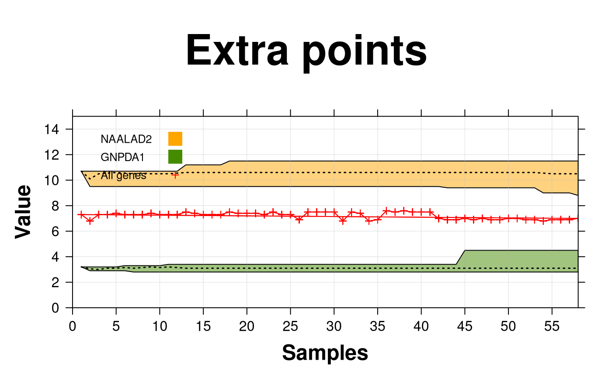

Make a polygonplot
create.polygonplot.RdTakes a data.frame and creates a polygon
Usage
create.polygonplot(
formula,
data,
filename = NULL,
groups = NULL,
main = NULL,
main.just = 'center',
main.x = 0.5,
main.y = 0.5,
main.cex = 3,
max,
min,
col = 'white',
alpha = 0.5,
border.col = 'black',
strip.col = 'white',
strip.cex = 1,
type = 'p',
cex = 0.75,
pch = 19,
lwd = 1,
lty = 1,
axes.lwd = 1,
xlab.label = tail(sub('~', '', formula[-2]), 1),
ylab.label = tail(sub('~', '', formula[-3]), 1),
xlab.cex = 2,
ylab.cex = 2,
xlab.col = 'black',
ylab.col = 'black',
xlab.top.label = NULL,
xlab.top.cex = 2,
xlab.top.col = 'black',
xlab.top.just = 'center',
xlab.top.x = 0.5,
xlab.top.y = 0,
xaxis.lab = TRUE,
yaxis.lab = TRUE,
xaxis.cex = 1.5,
yaxis.cex = 1.5,
xaxis.rot = 0,
yaxis.rot = 0,
xaxis.log = FALSE,
yaxis.log = FALSE,
xaxis.fontface = 'bold',
yaxis.fontface = 'bold',
xaxis.col = 'black',
yaxis.col = 'black',
xaxis.tck = 1,
yaxis.tck = 1,
xlimits = NULL,
ylimits = NULL,
xat = TRUE,
yat = TRUE,
layout = NULL,
as.table = FALSE,
x.spacing = 0,
y.spacing = 0,
x.relation = 'same',
y.relation = 'same',
top.padding = 0.5,
bottom.padding = 2,
right.padding = 1,
left.padding = 2,
ylab.axis.padding = 0,
add.border = FALSE,
add.xy.border = NULL,
add.median = FALSE,
median.lty = 3,
median.lwd = 1.5,
use.loess.border = FALSE,
use.loess.median = FALSE,
median = NULL,
median.col = 'black',
extra.points = NULL,
extra.points.pch = 21,
extra.points.type = 'p',
extra.points.col = 'black',
extra.points.fill = 'white',
extra.points.cex = 1,
add.rectangle = FALSE,
xleft.rectangle = NULL,
ybottom.rectangle = NULL,
xright.rectangle = NULL,
ytop.rectangle = NULL,
col.rectangle = 'transparent',
alpha.rectangle = 1,
xgrid.at = xat,
ygrid.at = yat,
grid.lty = 1,
grid.col = 'grey',
grid.lwd = 0.3,
add.xyline = FALSE,
xyline.col = 'black',
xyline.lwd = 1,
xyline.lty = 1,
abline.h = NULL,
abline.v = NULL,
abline.col = 'black',
abline.lwd = 1,
abline.lty = 1,
add.text = FALSE,
text.labels = NULL,
text.x = NULL,
text.y = NULL,
text.col = 'black',
text.cex = 1,
text.fontface = 'bold',
key = NULL,
legend = NULL,
height = 6,
width = 6,
size.units = 'in',
resolution = 1600,
enable.warnings = FALSE,
description = 'Created with BoutrosLab.plotting.general',
style = 'BoutrosLab',
preload.default = 'custom',
use.legacy.settings = FALSE,
inside.legend.auto = FALSE
);Arguments
- formula
The formula used to extract the boxplot components from the data-frame
- data
The data-frame to plot
- filename
Filename for tiff output, or if NULL returns the trellis object itself
- groups
The grouping variable in the data-frame
- main
The main title for the plot (space is reclaimed if NULL)
- main.just
The justification of the main title for the plot, default is centered
- main.x
The x location of the main title, deault is 0.5
- main.y
The y location of the main title, default is 0.5
- main.cex
Size of text for main plot title
- max
Max values for polygon
- min
Min values for polygon
- col
Fill colour of polygon, defaults to white
- alpha
Transparency of polygons when several are plotted, defaults to 0.5.
- border.col
Border colour(s) of polygon(s), defaults to black
- strip.col
Strip background colour, defaults to “white”
- strip.cex
Strip title character expansion
- type
Plot type
- cex
Character expansion for plotting symbol
- pch
Plotting character
- lwd
Specifies line width, defaults to 1
- lty
Specifies line style, defaults to 1 (solid)
- axes.lwd
Thickness of width of axes lines
- xlab.label
The label for the x-axis
- ylab.label
The label for the y-axis
- xlab.cex
Size of x-axis label, defaults to 3
- ylab.cex
Size of y-axis label, defaults to 3
- xlab.col
Colour of the x-axis label, defaults to “black”
- ylab.col
Colour of the y-axis label, defaults to “black”
- xlab.top.label
The label for the top x-axis
- xlab.top.cex
Size of top x-axis label
- xlab.top.col
Colour of the top x-axis label
- xlab.top.just
Justification of the top x-axis label, defaults to centered
- xlab.top.x
The x location of the top x-axis label
- xlab.top.y
The y location of the top y-axis label
- xaxis.lab
Vector listing x-axis tick labels, defaults to automatic
- yaxis.lab
Vector listing y-axis tick labels, defaults to automatic
- xaxis.cex
Size of x-axis scales, defaults to 2
- yaxis.cex
Size of y-axis scales, defaults to 2
- xaxis.rot
Rotation of x-axis tick labels; defaults to 0
- yaxis.rot
Rotation of y-axis tick labels; defaults to 0
- xaxis.log
Logical indicating whether x-variable should be in logarithmic scale (and what base if numeric)
- yaxis.log
Logical indicating whether y-variable should be in logarithmic scale (and what base if numeric)
- xaxis.fontface
Fontface for the x-axis scales
- yaxis.fontface
Fontface for the y-axis scales
- xaxis.col
Colour of the x-axis tick labels, defaults to “black”
- yaxis.col
Colour of the y-axis tick labels, defaults to “black”
- xaxis.tck
Specifies the length of the tick marks for x-axis, defaults to 1
- yaxis.tck
Specifies the length of the tick marks for y-axis, defaults to 1
- xlimits
Two-element vector giving the x-axis limits
- ylimits
Two-element vector giving the y-axis limits
- xat
Vector listing where the x-axis labels should be drawn
- yat
Vector listing where the y-axis labels should be drawn
- layout
A vector specifying the number of columns, rows (e.g., c(2,1). Default is NULL; see lattice::xyplot for more details
.
- as.table
Specifies panel drawing order, default is FALSE which draws panels from bottom left corner, moving right then up. Set to TRUE to draw from top left corner, moving right then down
- x.spacing
A number specifying the distance between panels along the x-axis, defaults to 0
- y.spacing
A number specifying the distance between panels along the y-axis, defaults to 0
- x.relation
Allows x-axis scales to vary if set to “free”, defaults to “same”
- y.relation
Allows y-axis scales to vary if set to “free”, defaults to “same”
- top.padding
A number specifying the distance to the top margin, defaults to 0.5
- bottom.padding
A number specifying the distance to the bottom margin, defaults to 2
- right.padding
A number specifying the distance to the right margin, defaults to 1
- left.padding
A number specifying the distance to the left margin, defaults to 2
- ylab.axis.padding
A number specifying the distance of ylabel to the y-axis, defaults to 0
,
- add.border
Add xy border to polygon, default is FALSE
- add.xy.border
DEPRECATED: Use `add.border` argument instead
- add.median
Add median line, default is FALSE
- median.lty
Median line type
- median.lwd
Median line width, defaults to 1.5
- use.loess.border
Use loess curve for border instead of max/min values, default is FALSE
- use.loess.median
Use loess curve for median values, default is FALSE
- median
Median values for median line
- median.col
Median line colour, default is black
- extra.points
If not set to NULL (default), add a set of extra points to the plot. A list of two numeric vectors named “x” and “y” giving the co-ordinates of the points to be added
- extra.points.pch
A vector specifying the types of extra points to add to the plot. Defaults to 21
- extra.points.type
A vector specifying the plot type. Defaults to “p”
- extra.points.col
A vector specifying the border colours of the extra points to add to the plot. Defaults to “black”
- extra.points.fill
A vector specifying the fill colours of the extra points to add to the plot. Defaults to “white”
- extra.points.cex
A vector specifying the sizes of the extra points to add to the plot. Defaults to 1
- add.rectangle
Allow a rectangle to be drawn, default is FALSE
- xleft.rectangle
Specifies the left x coordinate of the rectangle to be drawn
- ybottom.rectangle
Specifies the bottom y coordinate of the rectangle to be drawn
- xright.rectangle
Specifies the right x coordinate of the rectangle to be drawn
- ytop.rectangle
Specifies the top y coordinate of the rectangle to be drawn
- col.rectangle
Specifies the colour to fill the rectangle's area
- alpha.rectangle
Specifies the colour bias of the rectangle
- xgrid.at
A vector listing the co-ordinates at which vertical grid-lines should be drawn. Default suppresses drawing of vertical grid-lines
- ygrid.at
A vector listing the co-ordinates at which horizontal grid-lines should be drawn. Default suppresses drawing of horizontal grid-lines
- grid.lty
Specifies the line type to use for the grid-lines. Defaults to 1 (solid lines)
- grid.col
Specifies the colour to use for the grid-lines. Defaults to “grey”
- grid.lwd
Specifies the width of the grid-lines. Defaults to 0.3
- add.xyline
Allow y=x line to be drawn, default is FALSE
- xyline.col
y=x line colour, defaults to black
- xyline.lwd
Specifies y=x line width, defaults to 1
- xyline.lty
Specifies y=x line style, defaults to 1 (solid)
- abline.h
Allow horizontal line to be drawn, default to NULL
- abline.v
Allow vertical line to be drawn, default to NULL
- abline.col
Horizontal line colour, defaults to black
- abline.lwd
Specifies horizontal line width, defaults to 1
- abline.lty
Specifies horizontal line style, defaults to 1 (solid)
- add.text
Allow additional text to be drawn, default is FALSE
- text.labels
Labels for additional text
- text.x
The x co-ordinates where additional text should be placed
- text.y
The y co-ordinates where additional text should be placed
- text.col
The colour of additional text
- text.cex
The size of additional text
- text.fontface
The fontface for additional text
- key
Add a key to the plot. See xyplot.
- legend
Add a legend to the plot. Helpful for adding multiple keys and adding keys to the margins of the plot. See xyplot.
- height
Figure height, defaults to 6 inches
- width
Figure width, defaults to 6 inches
- size.units
Figure units, defaults to inches
- resolution
Figure resolution in dpi, defaults to 1600
- enable.warnings
Print warnings if set to TRUE, defaults to FALSE
- description
Short description of image/plot; default NULL.
- style
defaults to “BoutrosLab”, also accepts “Nature”, which changes parameters according to Nature formatting requirements
- preload.default
ability to set multiple sets of diffrent defaults depending on publication needs
- use.legacy.settings
boolean to set wheter or not to use legacy mode settings (font)
- inside.legend.auto
boolean specifying whether or not to use the automatic inside legend function
Value
If filename is NULL then returns the trellis object, otherwise creates a plot and returns a 0/1 success code.
Warning
If this function is called without capturing the return value, or specifying a filename, it may crash while trying to draw the histogram. In particular, if a script that uses such a call of create histogram is called by reading the script in from the command line, it will fail badly, with an error message about unavailable fonts:
Error in grid.Call.graphics("L_text", as.graphicsAnnot(x$label), x$x, )
Invalid font type
Calls: print ... drawDetails.text -> grid.Call.graphics -> .Call.graphics
Examples
set.seed(12345);
temp <- matrix(runif(1010), ncol = 10) + sort(runif(101));
simple.data <- data.frame(
x = 0:100,
max = apply(temp, 1, max),
min = apply(temp, 1, min)
);
create.polygonplot(
# filename = tempfile(pattern = 'Polygon_Simple', fileext = '.tiff'),
formula = NA ~ x,
data = simple.data,
max = simple.data$max,
min = simple.data$min,
main = 'Simple',
xlimits = c(0,100),
ylimits = c (0,2),
col = default.colours(1),
description = 'Polygon created by BoutrosLab.plotting.general',
resolution = 100
);
# Compare two genes across increasing numbers of samples
data1 <- microarray[1,1:58];
data2 <- microarray[2,1:58];
gene1 <- as.data.frame(matrix(nrow = 58, ncol = 58));
gene2 <- as.data.frame(matrix(nrow = 58, ncol = 58));
fill.matrix <- function(x, gene, data){
for(i in x){
gene[i, 1:i] <- rep(NA, i);
gene[i, i:58] <- rep(as.numeric(data[i]), 58-i+1);
}
return(gene);
};
gene1 <- fill.matrix(1:58, gene1, data1);
gene1 <- t(matrix(unlist(gene1), ncol = 58, byrow = TRUE));
gene2 <- fill.matrix(1:58, gene2, data2);
gene2 <- t(matrix(unlist(gene2), ncol = 58, byrow = TRUE));
# Set up the data
polygon.data.gene1 <- data.frame(
x = 1:58,
max = apply(gene1, 2, function(x) {max(x, na.rm = TRUE)}),
median = apply(gene1, 2, function(x) {median(x, na.rm = TRUE)}),
min = apply(gene1, 2, function(x) {min(x, na.rm = TRUE)}),
set = rownames(microarray[1,]),
extra = apply(microarray[1:58], 2, function(x) {median(x)})
);
polygon.data.two.genes <- rbind(
polygon.data.gene1,
data.frame(
x = 1:58,
max = apply(gene2, 2, function(x) {max(x, na.rm = TRUE)}),
median = apply(gene2, 2, function(x) {median(x, na.rm = TRUE)}),
min = apply(gene2, 2, function(x) {min(x, na.rm = TRUE)}),
set = rownames(microarray[2,]),
extra = apply(microarray[1:58], 2, function(x) {median(x)})
)
)
# Minimal Input
create.polygonplot(
# filename = tempfile(pattern = 'Polygon_Minimal_Input', fileext = '.tiff'),
formula = NA ~ x,
data = polygon.data.gene1,
max = polygon.data.gene1$max,
min = polygon.data.gene1$min,
main = 'Minimal input',
xlimits = c(0,58),
ylimits = c (2,5),
description = 'Polygon created by BoutrosLab.plotting.general',
resolution = 100
);

# Axes & Labels
create.polygonplot(
# filename = tempfile(pattern = 'Polygon_Axes_Labels', fileext = '.tiff'),
formula = NA ~ x,
data = polygon.data.gene1,
max = polygon.data.gene1$max,
min = polygon.data.gene1$min,
main = 'Axes & labels',
xlimits = c(0,58),
ylimits = c (0,10),
# Axes & Labels
xlab.label = 'Samples',
ylab.label = 'Value',
xaxis.cex = 1,
yaxis.cex = 1,
xlab.cex = 1.5,
ylab.cex = 1.5,
xaxis.fontface = 1,
yaxis.fontface = 1,
xat = seq(0, 58, 5),
yat = seq(0, 10, 2),
description = 'Polygon created by BoutrosLab.plotting.general',
resolution = 100
);

# Colour
create.polygonplot(
# filename = tempfile(pattern = 'Polygon_Colour', fileext = '.tiff'),
formula = NA ~ x,
data = polygon.data.gene1,
max = polygon.data.gene1$max,
min = polygon.data.gene1$min,
main = 'Colour',
xlimits = c(0,58),
ylimits = c (0,10),
xlab.label = 'Samples',
ylab.label = 'Value',
xaxis.cex = 1,
yaxis.cex = 1,
xlab.cex = 1.5,
ylab.cex = 1.5,
xaxis.fontface = 1,
yaxis.fontface = 1,
xat = seq(0, 58, 5),
yat = seq(0, 10, 2),
# Colour
col = default.colours(1),
description = 'Polygon created by BoutrosLab.plotting.general',
resolution = 100
);

# Add median line and points
create.polygonplot(
# filename = tempfile(pattern = 'Polygon_Median_Points', fileext = '.tiff'),
formula = NA ~ x,
data = polygon.data.gene1,
max = polygon.data.gene1$max,
min = polygon.data.gene1$min,
# Median
median = polygon.data.gene1$median,
add.median = TRUE,
main = 'Plotting character',
xlimits = c(0,58),
ylimits = c (0,10),
xlab.label = 'Samples',
ylab.label = 'Value',
xaxis.cex = 1,
yaxis.cex = 1,
xlab.cex = 1.5,
ylab.cex = 1.5,
xaxis.fontface = 1,
yaxis.fontface = 1,
xat = seq(0, 58, 5),
yat = seq(0, 10, 2),
col = default.colours(1),
# border points
add.border = TRUE,
description = 'Polygon created by BoutrosLab.plotting.general',
resolution = 100
);

# \donttest{
# Additional Data
create.polygonplot(
# filename = tempfile(pattern = 'Polygon_Extra_Data', fileext = '.tiff'),
formula = NA ~ x,
# divide data
groups = set,
data = polygon.data.two.genes,
max = polygon.data.two.genes$max,
min = polygon.data.two.genes$min,
main = 'Two data sets',
median = polygon.data.two.genes$median,
add.median = TRUE,
xlimits = c(0,58),
ylimits = c (0,15),
xlab.label = 'Samples',
ylab.label = 'Value',
xaxis.cex = 1,
yaxis.cex = 1,
xlab.cex = 1.5,
ylab.cex = 1.5,
xaxis.fontface = 1,
yaxis.fontface = 1,
xat = seq(0, 58, 5),
yat = seq(0, 14, 2),
# Increasing number of colours
col = default.colours(2),
description = 'Polygon created by BoutrosLab.plotting.general',
resolution = 100
);

# Legend
create.polygonplot(
# filename = tempfile(pattern = 'Polygon_Legend', fileext = '.tiff'),
formula = NA ~ x,
groups = set,
data = polygon.data.two.genes,
max = polygon.data.two.genes$max,
min = polygon.data.two.genes$min,
main = 'Legend',
median = polygon.data.two.genes$median,
add.median = TRUE,
xlimits = c(0,58),
ylimits = c (0,15),
xlab.label = 'Samples',
ylab.label = 'Value',
xaxis.cex = 1,
yaxis.cex = 1,
xlab.cex = 1.5,
ylab.cex = 1.5,
xaxis.fontface = 1,
yaxis.fontface = 1,
xat = seq(0, 58, 5),
yat = seq(0, 14, 2),
col = default.colours(2),
# Adding legend
key = list(
text = list(
lab = rownames(microarray[1:2,]),
cex = 0.8,
col = 'black'
),
points = list(
pch = 15,
col = default.colours(2),
cex = 2
),
x = 0.04,
y = 0.93,
padding.text = 3,
columns = 1
),
description = 'Polygon created by BoutrosLab.plotting.general',
resolution = 200
);
# Panel Organiation
create.polygonplot(
# filename = tempfile(pattern = 'Polygon_Panel', fileext = '.tiff'),
# divide data
formula = NA ~ x | set,
data = polygon.data.two.genes,
max = polygon.data.two.genes$max,
min = polygon.data.two.genes$min,
main = 'Panel',
median = polygon.data.two.genes$median,
add.median = TRUE,
xlimits = c(0,58),
ylimits = c (0,15),
xlab.label = 'Samples',
ylab.label = 'Value',
xaxis.cex = 1,
yaxis.cex = 1,
xlab.cex = 1.5,
ylab.cex = 1.5,
xaxis.fontface = 1,
yaxis.fontface = 1,
xat = seq(0, 58, 5),
yat = seq(0, 14, 2),
col = default.colours(1),
description = 'Polygon created by BoutrosLab.plotting.general',
resolution = 200
);
# Extra Points
create.polygonplot(
# filename = tempfile(pattern = 'Polygon_Extra_Points', fileext = '.tiff'),
formula = NA ~ x,
groups = set,
data = polygon.data.two.genes,
max = polygon.data.two.genes$max,
min = polygon.data.two.genes$min,
main = 'Extra points',
median = polygon.data.two.genes$median,
add.median = TRUE,
xlimits = c(0,58),
ylimits = c (0,15),
xlab.label = 'Samples',
ylab.label = 'Value',
xaxis.cex = 1,
yaxis.cex = 1,
xlab.cex = 1.5,
ylab.cex = 1.5,
xaxis.fontface = 1,
yaxis.fontface = 1,
xat = seq(0, 58, 5),
yat = seq(0, 14, 2),
col = default.colours(2),
# Add to legend
key = list(
text = list(
lab = c(rownames(microarray[1:2,]), 'All genes'),
cex = 0.8,
col = 'black'
),
points = list(
pch = c(15, 15, 3),
col = c(default.colours(2), 'red'),
cex = c(2, 2, 0.7)
),
x = 0.04,
y = 0.93,
padding.text = 3,
columns = 1
),
# Extra points
extra.points = list(
x = polygon.data.two.genes$x,
y = polygon.data.two.genes$extra
),
extra.points.col = 'red',
extra.points.pch = 3,
extra.points.type = c('p', 'l'),
extra.points.cex = 0.7,
description = 'Polygon created by BoutrosLab.plotting.general',
resolution = 200
);

# Nature style
create.polygonplot(
# filename = tempfile(pattern = 'Polygon_Nature_style', fileext = '.tiff'),
formula = NA ~ x,
groups = set,
data = polygon.data.two.genes,
max = polygon.data.two.genes$max,
min = polygon.data.two.genes$min,
main = 'Nature style',
median = polygon.data.two.genes$median,
add.median = TRUE,
xlimits = c(0,58),
ylimits = c (0,15),
xaxis.cex = 1,
yaxis.cex = 1,
xlab.cex = 1.5,
ylab.cex = 1.5,
xaxis.fontface = 1,
yaxis.fontface = 1,
xat = seq(0, 58, 5),
yat = seq(0, 14, 2),
col = default.colours(2),
# Adding legend
key = list(
text = list(
lab = rownames(microarray[1:2,]),
cex = 0.8,
col = 'black'
),
points = list(
pch = 15,
col = default.colours(2),
cex = 2
),
x = 0.04,
y = 0.93,
padding.text = 3,
columns = 1
),
# set style to Nature
style = 'Nature',
# demonstrating how to italicize character variables
ylab.label = expression(paste('italicized ', italic('a'))),
# demonstrating how to create en-dashes
xlab.label = expression(paste('en dashs: 1','\u2013', '10'^'\u2013', ''^3)),
description = 'Polygon created by BoutrosLab.plotting.general',
resolution = 1200
);
#> Warning: Nature also requires italicized single-letter variables and en-dashes
#> for ranges and negatives. See example in documentation for how to do this.
#> Warning: Avoid red-green colour schemes, create TIFF files, do not outline the figure or legend.
# }